👤 个人信息
🎓 香港科技大学 CPEG 本科，AI / Robotics 辅修，2023-2027
🤖 HKUST ENTERPRIZE 机械组长，主导 RM2025 工程机器人结构设计；2025 赛季工程全明星，4 级矿石 5.8s 赛场兑换 WR。
结构设计
- SolidWorks 建模、装配设计、工程图、BOM 与装配图
- 模块化、快拆、维修友好结构与复杂机构空间布局
制造装配
- CNC / 3D 打印结构件设计、加工沟通与装配调试
- 公差修正、赛前质量验证、场间维修和设备维护
机电与工艺
- 气动系统、电机选型、轴承、齿轮、链条、同步带传动
- 常用材料、钣金/板材组合、结构强度与冲击可靠性取舍
仿真与联调
- 基础强度仿真、负载/冲击测试和样机问题闭环
- Python / MATLAB / C++ 数据处理与调试，可与电控、视觉、算法对齐联调风险
⚙ 个人项目
2025 RM 工程机器人
⚙RoboMaster 2025 工程机器人
长臂展六轴臂 · 高稳定底盘 · 快速兑矿链路
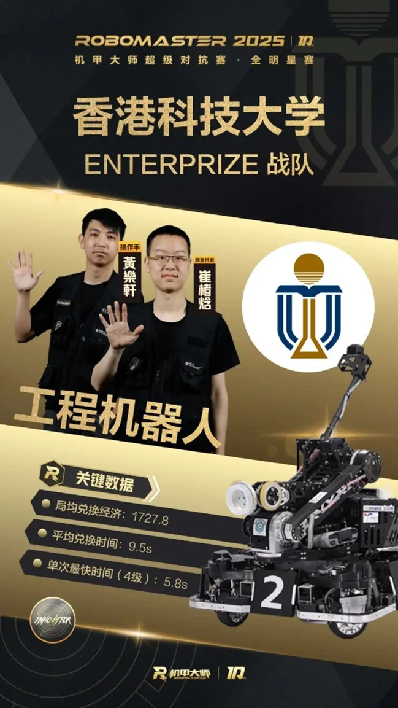
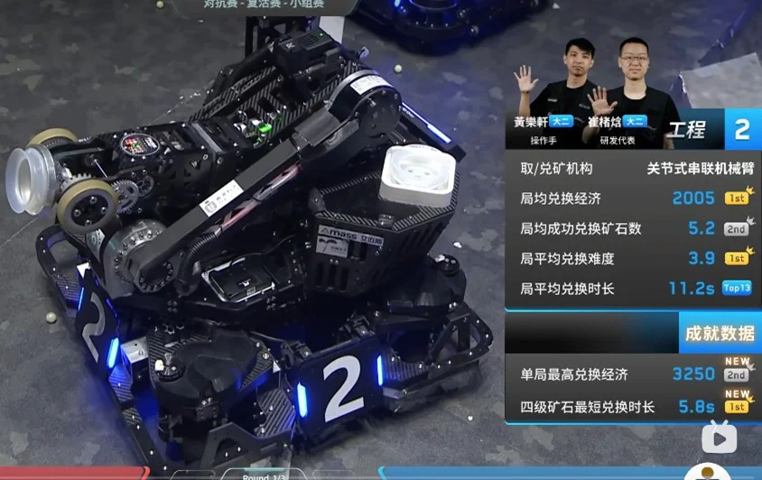
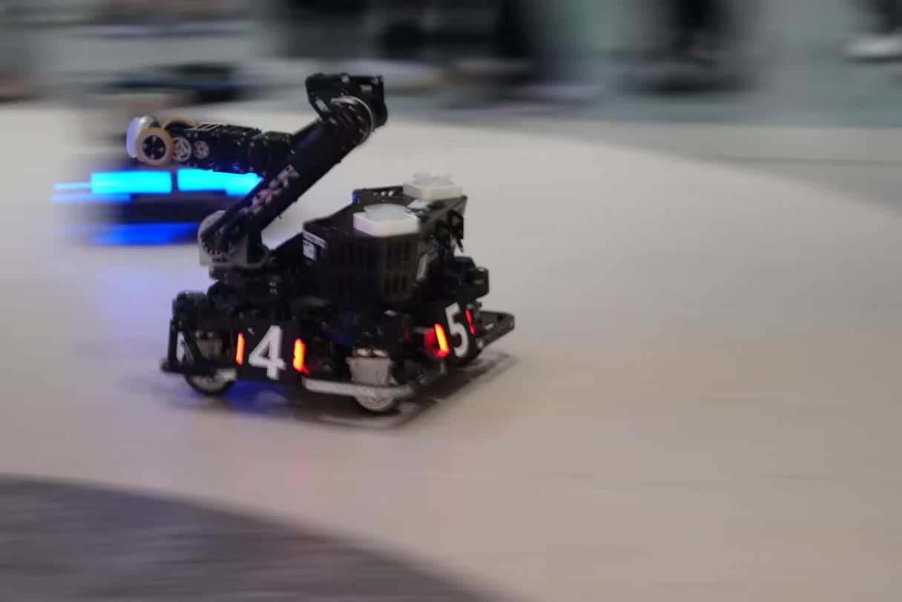
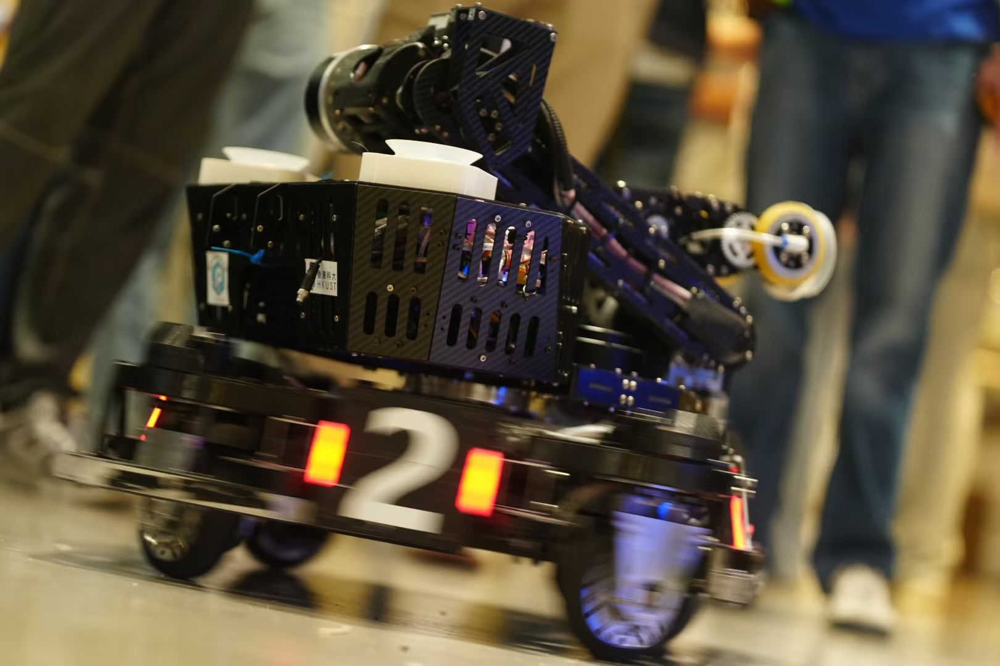
🏆 实现 5.8s 的破纪录采矿速度，入选 2025 赛季全明星阵容。
🛠 整机架构与工作空间
- 独立主导轮式六轴机械臂工程机器人结构设计，围绕取矿、兑矿、上台阶、偷矿、救援等多任务确定 PUMA 构型、连杆参数与整车布局
- 整车 38 kg，初始尺寸 590×590×540 mm，最大工作空间 1400×1400×1200 mm
- 将机械臂工作空间、图传视野、UWB 布局和操作链路作为整机架构约束，降低碰撞风险与联调难度
🧱 六轴机械臂与 Wrist 末端
- L2 上臂 380 mm，L3+L4 前臂 420 mm，兼顾长臂展、兑矿自由度与末端刚度
- J4 采用电滑环 + 中空旋转气动接头嵌套，实现末端电/气一体 360° 旋转传输
- Wrist 末端集成吸盘、驱动轮、J5/J6 两轴传动与稳定气路，支撑快速取兑矿动作
🚘 高稳定舵轮底盘
- 采用 5 寸实心轮、3508 减速箱、MGN7 滑轨与气弹簧舵下悬挂，提升抓地、脱困与兑矿时底盘稳定性
- 悬挂结构削弱重机械臂高速动作对底盘姿态的扰动，支持边移动底盘边操作机械臂
- 配合高流量 3508 改装真空泵与吸附状态反馈，提高矿石抓取稳定性
🔧 赛场可靠性与维护
- 云台-底盘、云台-机械臂、机械臂整体和单个舵轮组均按快拆维修设计，便于场间排障
- 半年高强度调试与实战中零重大结构损伤，支撑 5.8s 四级矿兑换 WR 与工程全明星入选
关键子系统 / 模块
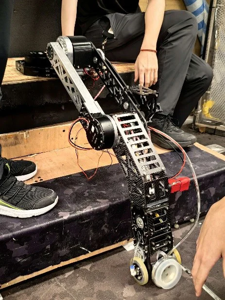
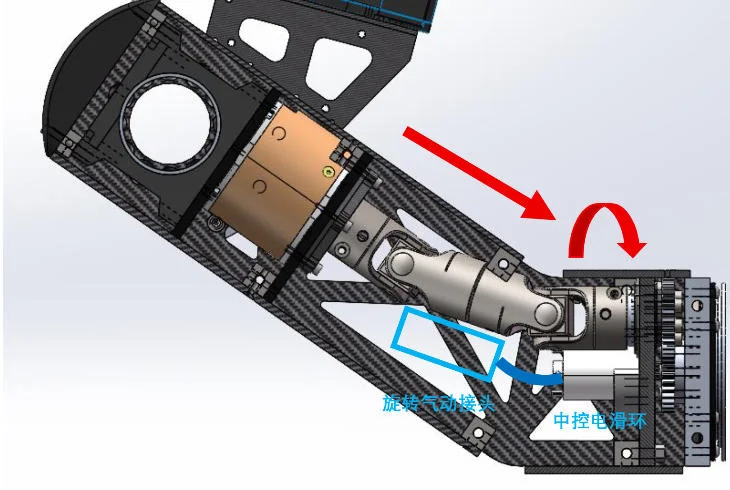
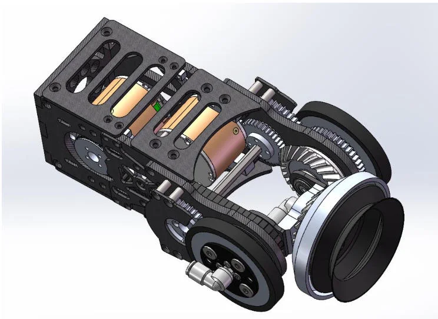
六轴机械臂末端结构
- Wrist 末端集成 HB80 风琴吸盘、驱动轮、J5/J6 两轴传动与稳定气路
- J4 采用电滑环 + 中空旋转气动接头嵌套，实现末端电/气 360° 旋转传输
- 万向轴传动 + 电机后置 L4，压缩末端体积，适配矿槽内取矿空间
- J5/J6 等速同步轮、齿轮组与锥齿轮组合传动，保证末端姿态控制精度
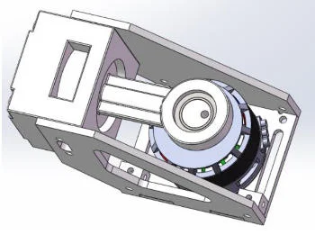
3508 改装气泵
- 将原有有刷气泵改为 3508 无刷电机驱动，避免供电冲击并提升流量上限
- 维持 -85 kPa 真空度，5000 rpm 下流量超过 40 L/min
- 整泵 <300 g，为机械臂末端保留更多质量和惯量余量
- 通过电机电流反馈判断吸附状态，配合吸盘实现稳定取矿与掉矿风险监测
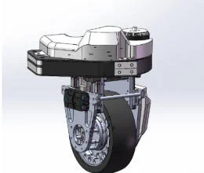
工程舵轮模组
- 5 寸实心橡胶轮提供高抓地力和耐磨性，支撑赛场脱困与快速返回补给
- 3508 自制减速箱 + MGN7 滑轨 + 气弹簧舵下悬挂，兼顾高载荷与小陀螺稳定性
- 兑矿时可边移动底盘边操作机械臂，提升四级矿兑换节奏
- 单个舵轮组按快拆维护设计，便于场间排障和模块更换
配套遥操作终端
🎮自定义控制器
操作手习惯适配 · 六轴同构映射 · 快速兑矿链路
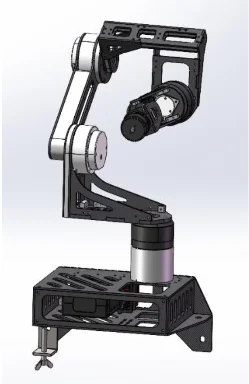
🎯 作为工程机器人的核心输入终端，根据操作手习惯和手臂数据调整连杆布局，支撑赛场 5.8s 兑换流程。
👋 操作手习惯适配
- 控制器拓扑与主机械臂近似同构，降低操作者到机器人动作的空间映射成本
- 根据操作手手臂数据调整 L2 位置，使操作姿态更自然、长时操作更稳定
- 四级矿兑换时可单手不换姿势完成左右肘位切换，减少高压比赛中的动作重置
⚡ 快速响应结构方案
- 桌面级尺寸、低运动惯量，提升手部动作到机械臂响应的跟随感
- 关键受力件使用 CNC，外壳和辅助结构采用 3D 打印，便于围绕操作反馈快速迭代
- 与图传视野、Wrist 末端和兑矿动作链路共同优化，而不是单独作为外设存在
RM 2024 英雄机器人系统
🤖RoboMaster 2024 英雄机器人
双极摩擦轮 · 自适应悬挂底盘 · 全向移动
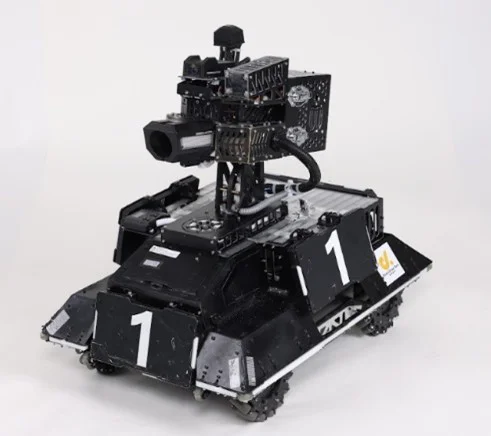
🎯 围绕大弹丸精准发射、稳定供弹与全向机动越障设计；10m 散布 <25×25cm，初速波动 ±0.1 m/s，2Hz 稳定供弹，通过 30cm 垂直跌落冲击测试。
🎯 高一致性双极摩擦轮发射系统
- 10m 散布 < 25×25cm，初速波动 ±0.1m/s
- 双极对冲摩擦轮机构，实现极窄散布
🏃 自适应麦克纳姆轮悬挂底盘
- 全维度灵巧位移与快速转场
- 通过 30cm 垂直跌落高强度冲击测试
关键子系统 / 模块
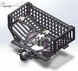
大弹丸侧供弹系统
- 用于 2024 英雄机器人，面向类高尔夫球大弹丸连续供弹
- 基于队内既有侧供弹方案进行优化和微调，优先保证可靠性与风险收敛
- 针对弹丸尺寸公差优化防卡滞结构，支持 2Hz 稳定供弹
🦾四轴手臂外骨骼（课设）
穿戴式助力结构 · DH 运动学建模 · IMU 跟随验证
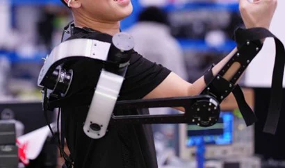
🧠 面向上肢助力与人机协同场景，完成 4 自由度轻量化外骨骼原型设计，并通过运动学建模与基础控制验证可行性。
🔬 人体运动匹配与建模
- 依据大臂、肘部主要运动自由度布置关节轴线，减少人机运动干涉
- 基于 DH 参数法建立运动学模型，并在仿真中验证工作空间覆盖率
🏃 跟随与助力控制
- 通过手背 IMU 预测手臂运动方向，驱动外骨骼完成跟随动作
- 闭环控制电机保持动作姿态，在助力模式下提供辅助力输出
📚 2024-2025 赛季技术预研与模块开发
01
🛠 舵轮模组预研
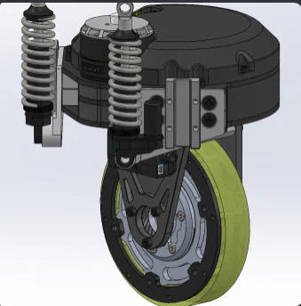
- 高负载方案：宽橡胶胎 + 舵下气弹簧悬挂，提升抓地、减震与底盘稳定性
- 2025 英雄预研轻量化方案：3508 电机本体 + 齿轮传动 + 光电门校准 + 聚氨酯轮 + 舵上悬挂
- 围绕不同兵种空间和载荷需求，分别验证高负载稳定性与小型化结构可行性
02
🎲 供弹系统预研
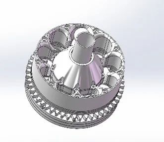
- 完成小弹丸中心供弹初版预研：多层预制、整流罩、防剪切优先
- 指导学弟优化小弹丸侧供弹：弹频由 20 Hz 提升至接近 30 Hz
- 结合大弹丸侧供弹经验，优先处理弹丸整流、防卡滞和高速供弹一致性问题
🎓 荣誉与奖项
奖学金与学业荣誉
- 奖学金：HKSAR Government Scholarship Fund – Talent Development Scholarship, 2024 & 2025
- 学业荣誉：HKUST SENG Dean's List, Fall 2023